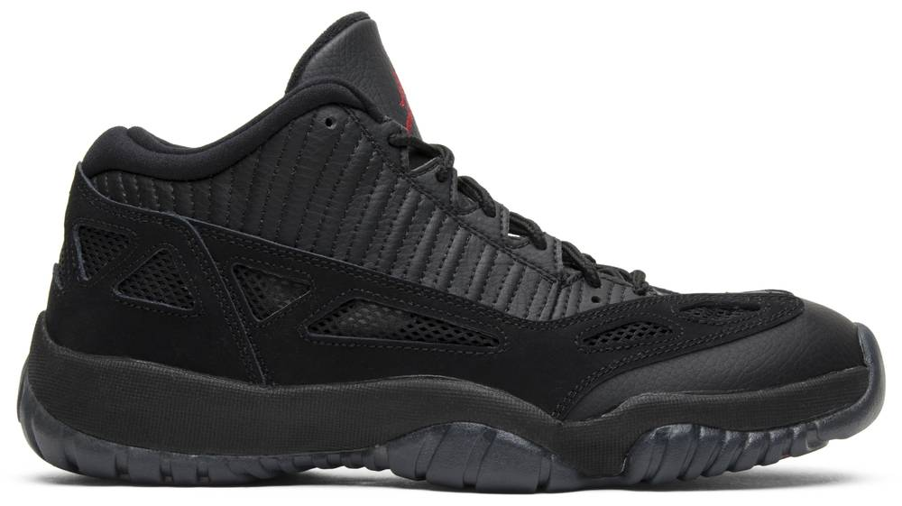

|  | NIKE / AIR / JORDAN |
||
| AIR JORDAN XI IE "BLACK CAT" | Buy Used | Buy New | |
While the Air Jordan 11 Low IE was originally designed as a lifestyle-oriented iteration of the classic on-court shoe,
this particular colorway was first designed by Nike back in 1996 for NBA referees.
The colorway was resurfaced in 2015 by Chris Paul, who was attending a Team USA minicamp.
A retro release of the shoe was released to the public shortly thereafter.
The lone branding element is an embroidered Jumpman logo on the tongue.